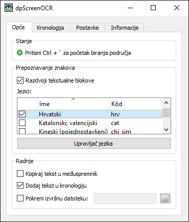

dpScreenOCR je program za prepoznavanje teksta na ekranu. Pokreće ga Tesseract, podržava više od 100 jezika i može dijeliti neovisne blokove teksta, poput stupaca. Pročitaj priručnik za upute o instaliranju, konfiguriranju i korištenju programa.
Preuzmi verziju 1.3.0 (promjene, licenca):
Doprinesi sudjelovanjem u prevođenju ili razvijanju programa.